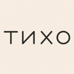
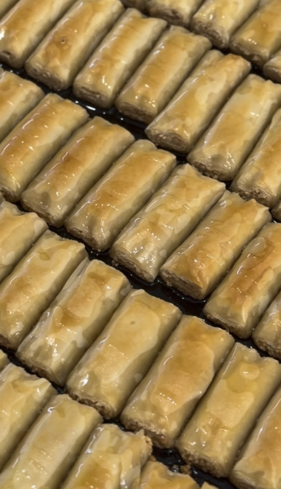

Сенной рынок
Место № 8, возле конфет.

ТИХО · Краснодар
Коробочка к чаю — для себя
и тех, кого хочется порадовать.

Два места в Краснодаре
Место № 8, возле конфет.
Пахлава, блины и горячее.
Если собираетесь на Сенной
Оставьте заявку на Сенной рынок: мы свяжемся с вами, чтобы подтвердить наличие.
Сейчас запись недоступна. Можно написать нам в Telegram.